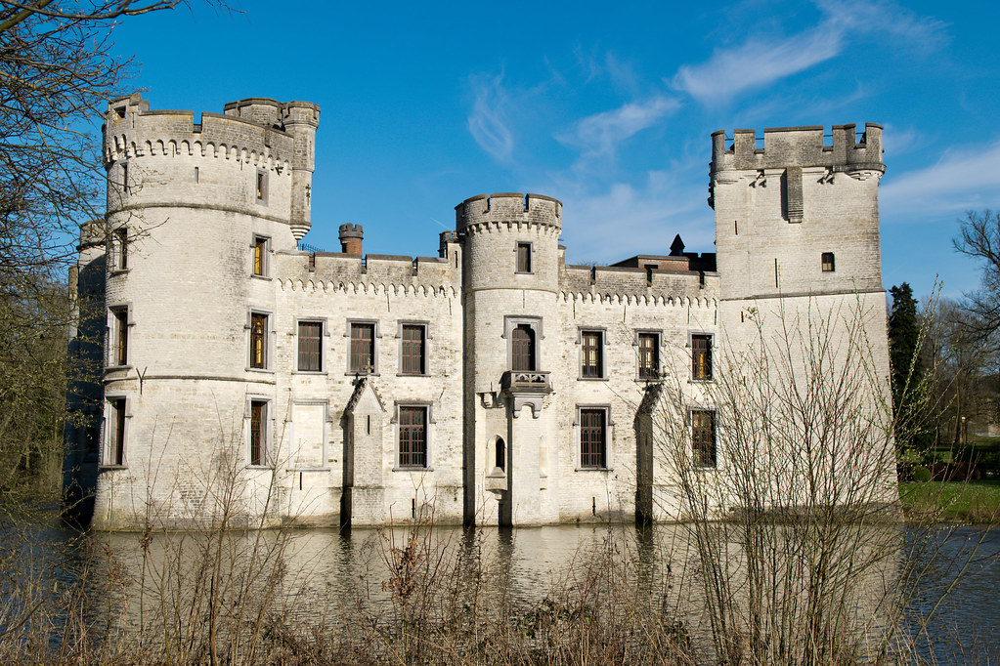
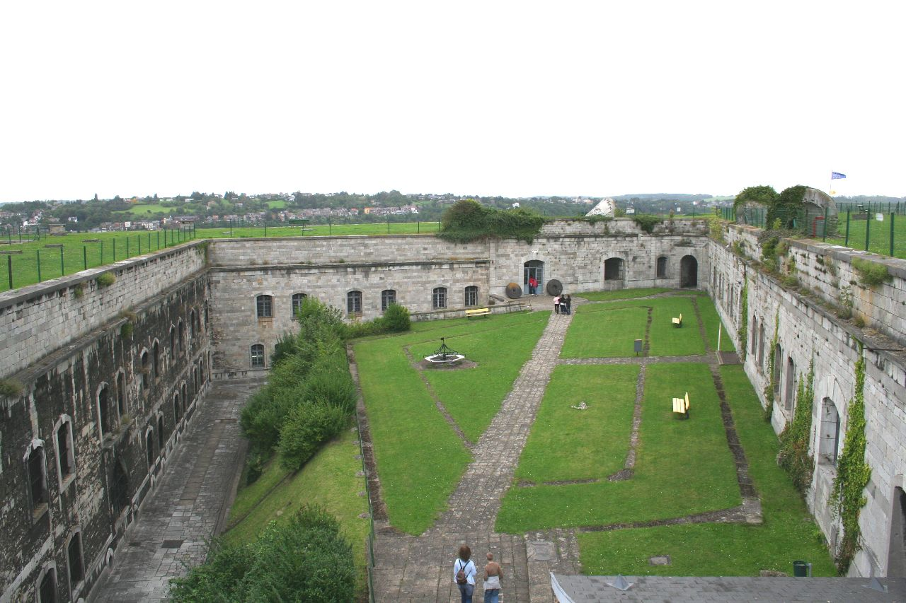
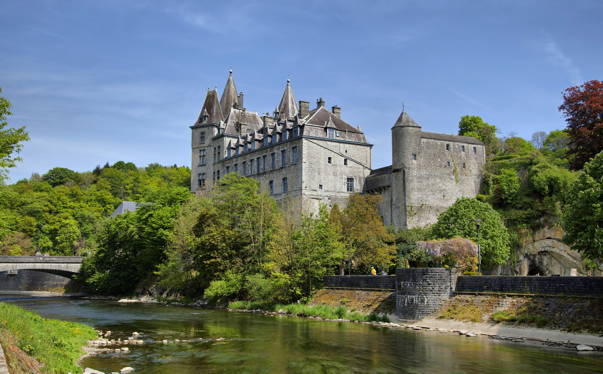
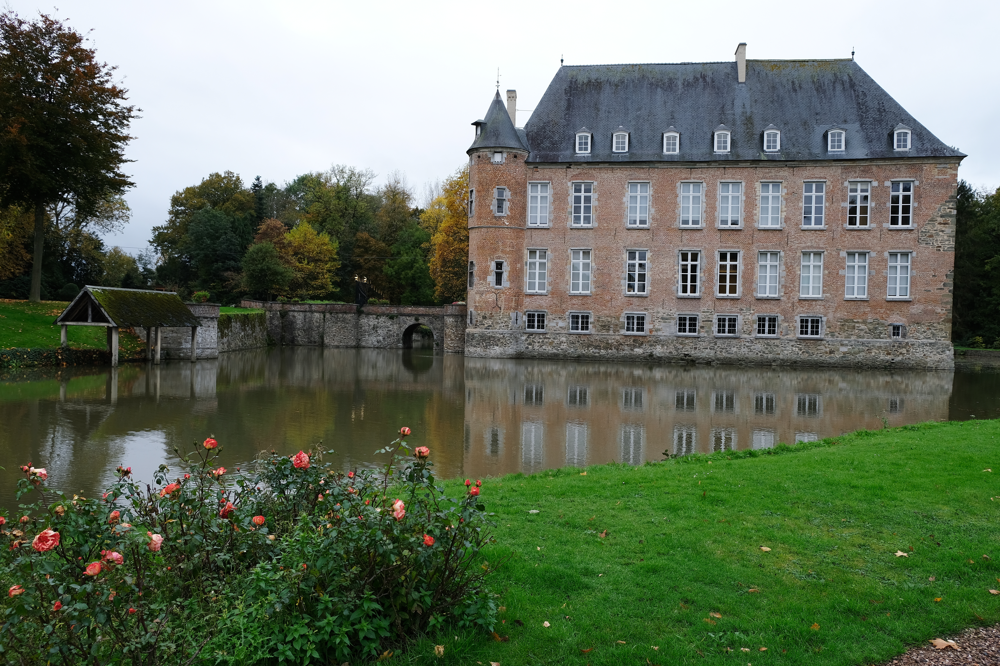
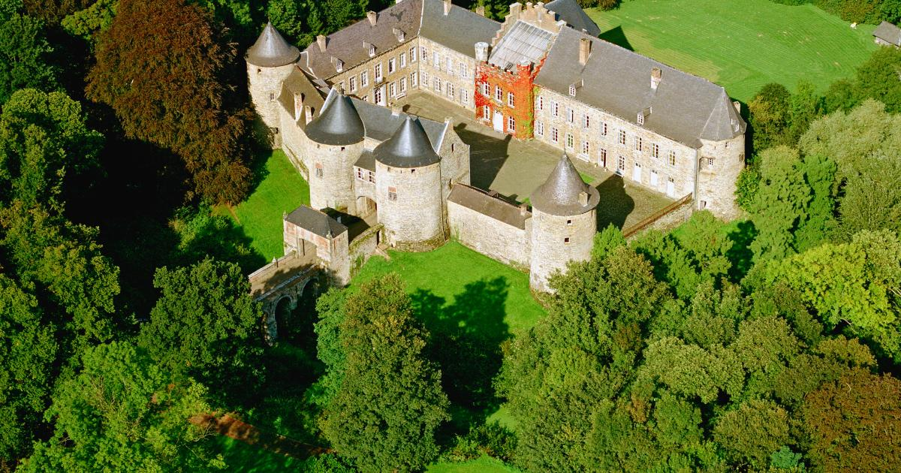
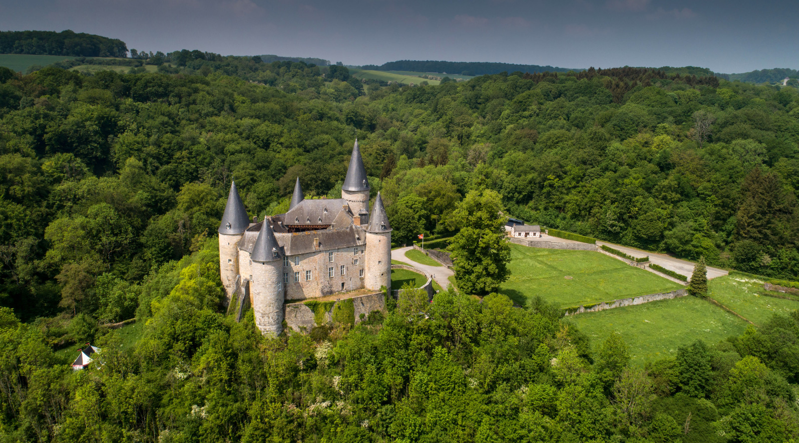

 TUINEN Kasteeltuinen en Parken in België Ontdek de prachtige tuinen en parken rondom Belgische kastelen. Van Franse tuinen tot Engelse landschapsparken. 18 september 2025 Lees meer →
 GESCHIEDENIS Middeleeuwse Kastelen en Hun Verhalen Duik in de fascinerende geschiedenis van middeleeuwse kastelen in België en ontdek hun geheimen. 15 september 2025 Lees meer →
 TIPS Gids voor je Eerste Kasteelbezoek Praktische tips voor het bezoeken van kastelen: wat te verwachten, hoe te plannen en wat mee te nemen. 12 september 2025 Lees meer →
 ARCHITECTUUR Architectuurstijlen van Belgische Kastelen Van gotiek tot barok: leer de verschillende architectuurstijlen herkennen in Belgische kastelen. 10 september 2025 Lees meer →
 RESTAURATIE Kastelen Restauratie en Behoud Hoe worden historische kastelen gerestaureerd en behouden voor toekomstige generaties? 8 september 2025 Lees meer →
 LEGENDES Kastelen, Legendes en Verhalen Mysterieuze verhalen en legendes die zich afspelen in en rond Belgische kastelen. 5 september 2025 Lees meer →